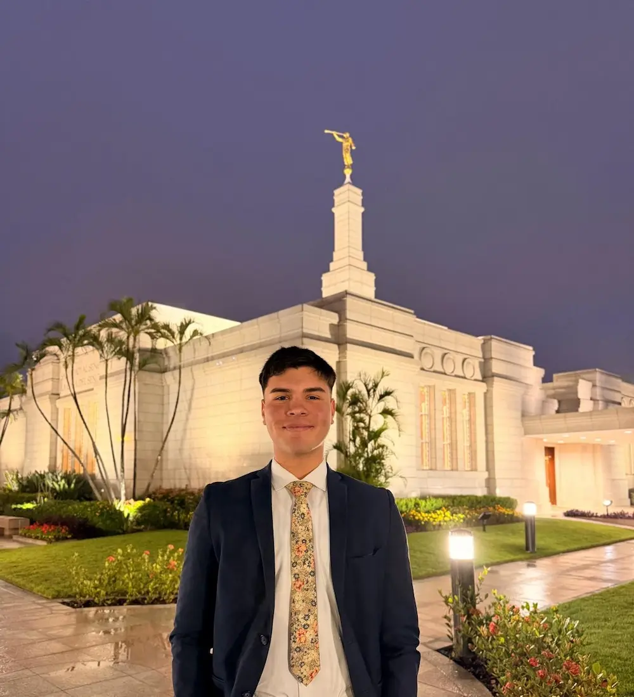

Esteban Jared Aponte | WDD 130

Hello! My name is Esteban and I am from Paraguay. I am very excited about this course to learn more how to develop websites I feel really blessed for the opportunity I have to improve my ability to write programs. When I was a kid I always wondered how the computers work, what where the things that make the computers to compute, the games to run, it was just unbelievable for me, but as I kept studying and watching the technology advances, now I am better able to understand what is going on in this world. I still need to learn a lot and that's even more exciting.Right now, my main goal is to build solid, well-structured web pages while mastering the fundamentals of HTML and CSS. Beyond just writing code, I love the creative process of turning a blank screen into something useful and visually appealing. In the future, I hope to combine these web development skills with my growing programming knowledge to create projects that can help others and solve real-world problems. Every line of code I write feels like a step closer to turning curiosity into real-world impact. I am eager to keep pushing forward and see where this path takes me!